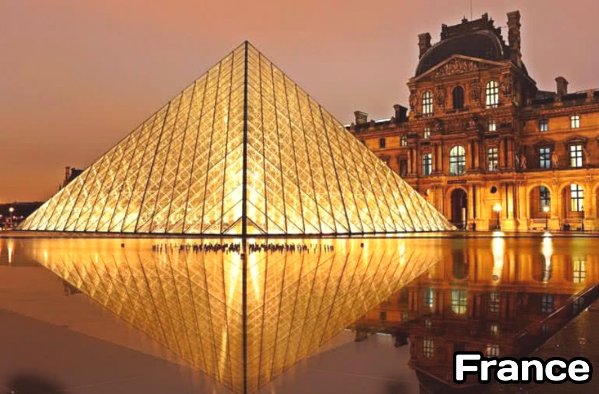
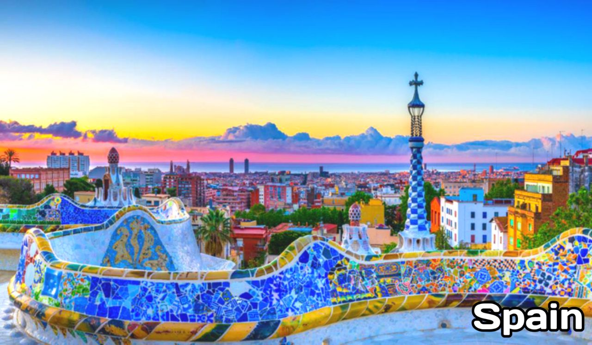
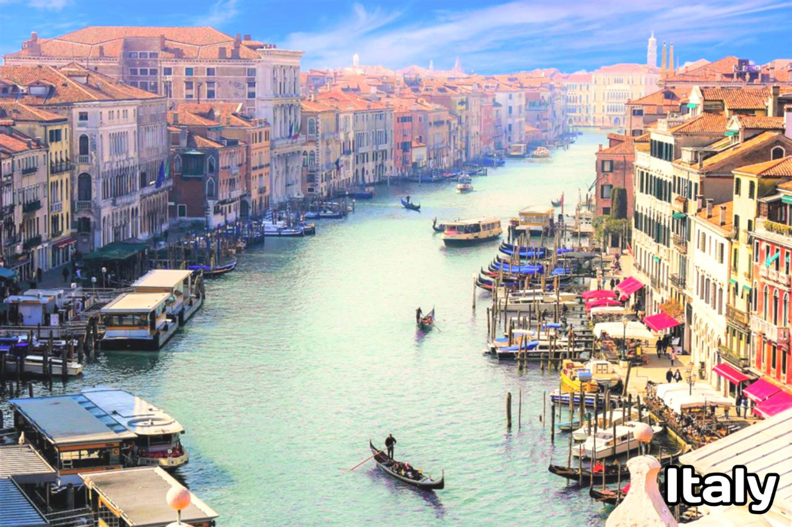
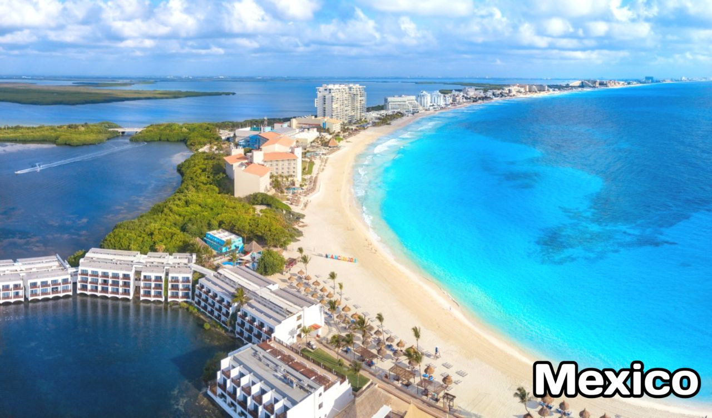
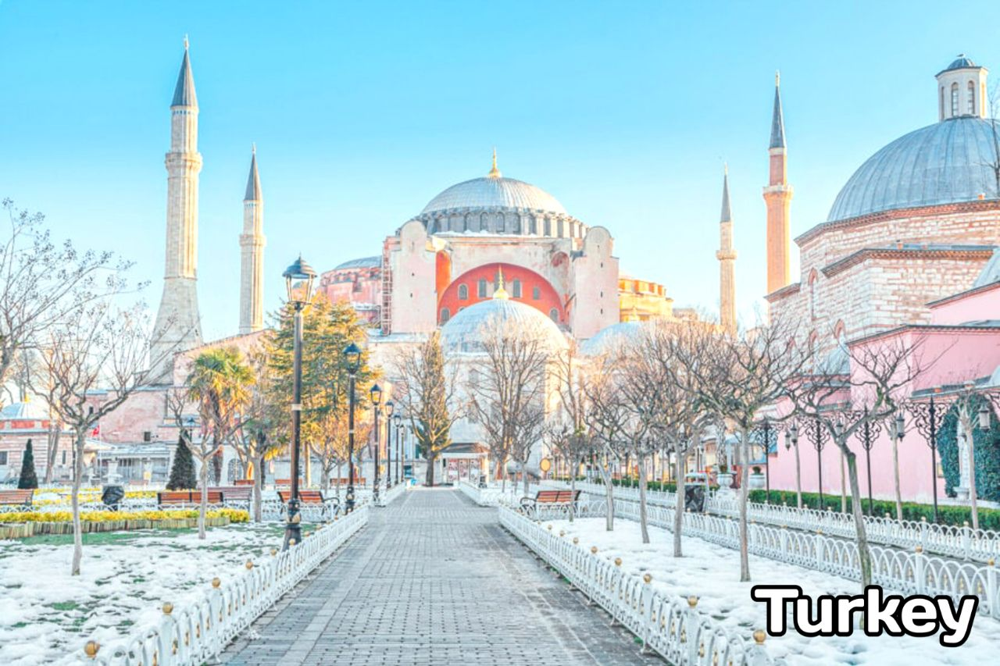
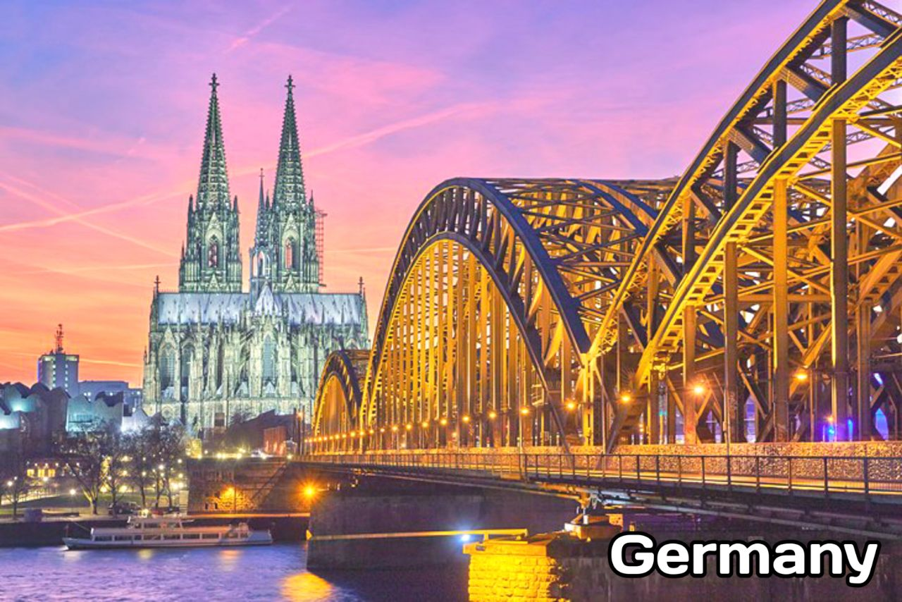
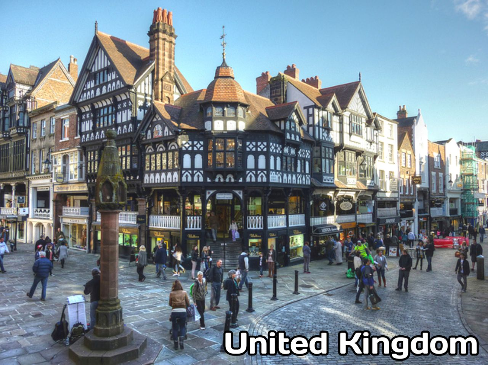

10 Best Places To Visit in New Year(2023) | Top Tourist Destinations
Some Surprising & Shocking Facts about Tourism Industry WorldWide
Tourism is a significant industry that involves the movement of people to destinations outside their normal place of work and residence, typically for leisure or business purposes. It includes a wide range of activities such as travel, transportation, accommodation, entertainment, and food and beverage service, and can generate significant economic, social, cultural, and environmental impacts on a destination.
At the global level, tourism is a major contributor to the global economy, with the World Travel & Tourism Council (WTTC) estimating that in 2020, the travel and tourism industry contributed approximately 9.3% of the global gross domestic product (GDP). International tourism generates billions of dollars in income for destinations around the world, with the United Nations World Tourism Organization (UNWTO) reporting that international tourism receipts reached $1.5 trillion in 2019.
However, the COVID-19 pandemic had had a significant impact on the tourism industry, resulting in significant disruptions and reductions in travel. Slowly & gradually tourism industry has began to reflourish again, People've began travelling with the same pace as before the covid time. People seem to be much more confident about travelling & exploring the places.
10 Best Places To Visit in New Year(2023)
Here are the 10 top tourist destinations based on the number of international tourist arrivals in 2019, according to data from the United Nations World Tourism Organization (UNWTO):
- France: 89.4 million international tourist arrivals
- Spain: 81.8 million international tourist arrivals
- United States: 79.6 million international tourist arrivals
- China: 70.9 million international tourist arrivals
- Italy: 58.3 million international tourist arrivals
- Mexico: 51.1 million international tourist arrivals
- Turkey: 50.9 million international tourist arrivals
- Germany: 50.7 million international tourist arrivals
- United Kingdom: 46.6 million international tourist arrivals
- Thailand: 38.3 million international tourist arrivals
It is important to note that the COVID-19 pandemic has had a significant impact on the global tourism industry, and these figures may not accurately reflect the current state of the industry. Additionally, the ranking of destinations may vary depending on the source and the criteria used to define and count international tourist arrivals.
- France 
- Spain 
- United States
- China
- Italy 
- Mexico 
- Turkey 
- Germany 
- United Kingdom 
- Thailand
France is a diverse and popular tourist destination that offers a wide range of attractions and experiences. Located in western Europe, the country is known for its iconic landmarks, stunning natural beauty, rich history and culture, and world-renowned cuisine.
One of the most famous places visited in France is the capital city of Paris, which is known for its iconic landmarks such as the Eiffel Tower, Notre Dame Cathedral, and the Louvre Museum. Paris is also home to a wealth of cultural attractions, including museums, galleries, theaters, and music venues.
Other popular destinations in France include the French Riviera, a region known for its sunny climate, beautiful beaches, and luxury resorts; the Loire Valley, a region known for its stunning castles; Normandy, a region known for its beautiful coastline and historical sites; and the French Alps, a mountain range popular for skiing and other winter sports, as well as for its picturesque villages and stunning natural beauty. The country is also home to a number of wine regions, including Bordeaux and Champagne, as well as the city of Lyon and the Provence region.
Spain is a country with a diverse and rich culture that attracts millions of tourists each year. Located in southwestern Europe, the country offers a wide range of attractions and experiences for visitors to enjoy.
One of the most popular destinations in Spain is the capital city of Madrid. This vibrant city is known for its historic landmarks, cultural attractions, and lively nightlife. Some of the must-see landmarks in Madrid include the Royal Palace, Plaza Mayor, and the iconic Puerta del Sol. The city is also home to several world-class museums such as the Prado and the Reina Sofía, which showcase some of the finest works of art in the world.
In addition to Madrid, Spain is home to many other beautiful and diverse regions that are worth exploring. The island of Mallorca is known for its stunning beaches and resorts, while the city of Barcelona is known for its unique architecture and vibrant culture. The region of Andalusia is home to stunning beaches and the historical city of Seville, while the region of Castilla y León boasts beautiful landscapes and historic cities such as Salamanca and León. Spain is also home to several wine regions, including Rioja and Ribera del Duero, and the Basque Country, which is known for its vibrant culture and delicious cuisine.
The United States is a country that is home to a wide range of attractions and destinations, catering to a variety of interests and preferences. Located in North America, the country is known for its diverse landscapes, rich history and culture, and world-renowned cities.
New York City, located in the state of New York, is a popular tourist destination known for its iconic landmarks and cultural attractions. One of the most famous landmarks in the city is the Statue of Liberty, a symbol of freedom and democracy that attracts millions of visitors each year. Central Park, a large urban park located in the heart of the city, is another popular destination, offering a wide range of recreational activities and beautiful natural landscapes. Times Square, a bustling commercial and entertainment district, is known for its bright lights and billboards, as well as its numerous theaters, restaurants, and shops. In addition to these famous landmarks, New York City is also home to a wealth of museums, galleries, theaters, and music venues that offer a wide range of cultural experiences for visitors to enjoy.
Other popular destinations in the United States include Los Angeles, a city located in the state of California that is known for its film industry, beautiful beaches, and celebrity culture; Las Vegas, a city located in the state of Nevada that is known for its casinos, entertainment, and nightlife; and Orlando, a city located in the state of Florida that is known for its theme parks and attractions. The United States is also home to a number of natural wonders, such as the Grand Canyon, Yellowstone National Park, and Niagara Falls, as well as iconic landmarks and historical sites, including the White House, Mount Rushmore, and the Golden Gate Bridge.
China is a vast and diverse country that is home to a wide range of attractions and destinations. Located in eastern Asia, the country is known for its rich history and culture, stunning natural beauty, and vibrant cities.
As the capital city of China, Beijing is a popular tourist destination that is known for its iconic landmarks and cultural attractions. Located in the northern part of the country, Beijing is home to a number of famous landmarks such as the Forbidden City, the Great Wall, and the Temple of Heaven. These landmarks offer visitors a glimpse into China's rich history and cultural heritage. In addition to these famous landmarks, Beijing is also home to a number of museums, galleries, and theaters that showcase the country's artistic and cultural achievements.
Aside from Beijing, China is home to many other popular destinations that are worth exploring. The city of Shanghai, located in the eastern part of the country, is known for its modern skyline and vibrant culture. The city of Xian, located in central China, is famous for its ancient history and the Terracotta Army. The province of Yunnan, located in the southwestern part of the country, is known for its stunning natural beauty and diverse cultures. China is also home to a number of natural wonders such as the Yellow Mountains, the Li River, and the Three Gorges Dam, as well as a number of iconic landmarks and historical sites including the Summer Palace, the Forbidden City, and the Temple of Heaven.
Italy is a popular tourist destination that is known for its rich history and culture, beautiful landscapes, and world-renowned cuisine. Located in southern Europe, the country is home to a wide range of attractions and destinations that cater to a variety of interests and preferences.
Italy is a country that is rich in history, culture, and natural beauty, making it a popular tourist destination. The capital city of Rome, located in the central part of the country, is known for its iconic landmarks such as the Colosseum, the Pantheon, and the Trevi Fountain. These landmarks offer visitors a glimpse into the country's rich history and cultural heritage. In addition to these famous landmarks, Rome is also home to a number of museums, galleries, and theaters that showcase Italy's artistic and cultural achievements.
Other popular destinations in Italy include the city of Florence, located in the central part of the country and known for its beautiful art and architecture. The city of Venice, located in the northeastern part of the country, is famous for its charming canals and gondolas. The island of Sicily, located in the southern part of the country, is known for its beautiful beaches and ancient history. Italy is also home to a number of natural wonders such as the Amalfi Coast, the Cinque Terre, and the Italian Alps, as well as a number of iconic landmarks and historical sites including the Leaning Tower of Pisa, the Roman Forum, and the Sistine Chapel.
Mexico is a popular tourist destination that is known for its rich culture, beautiful beaches, and vibrant cities. Located in North America, the country is home to a wide range of attractions and destinations that cater to a variety of interests and preferences.
Mexico is a country that is rich in culture and natural beauty, making it a popular tourist destination. The capital city of Mexico City, located in the central part of the country, is home to a number of iconic landmarks such as the Zocalo, the Palacio Nacional, and the Basilica of Our Lady of Guadalupe. These landmarks offer visitors a glimpse into the country's rich history and cultural heritage. In addition to these famous landmarks, Mexico City is also home to a number of museums, galleries, and theaters that showcase Mexico's artistic and cultural achievements.
Other popular destinations in Mexico include the resort town of Cancun, located on the Caribbean coast and known for its beautiful beaches and lively nightlife. The city of Playa del Carmen, also located on the Caribbean coast, is known for its beautiful beaches and vibrant atmosphere. The city of Puerto Vallarta, located on the Pacific coast, is famous for its beautiful beaches and charming old town. Mexico is also home to a number of natural wonders such as the Copper Canyon, the Monarch Butterfly Biosphere Reserve, and the Mayan ruins at Chichen Itza, as well as a number of iconic landmarks and historical sites including the Great Pyramid of Tenochtitlan and the Aztec Temple of Quetzalcoatl.
Turkey is a popular tourist destination that is known for its rich history, beautiful landscapes, and delicious cuisine. Located in western Asia and southeastern Europe, the country is home to a wide range of attractions and destinations that cater to a variety of interests and preferences.
Turkey is a country that is rich in history, culture, and natural beauty, making it a popular tourist destination. The city of Istanbul, located in the western part of the country, is home to a number of iconic landmarks such as the Hagia Sophia, the Blue Mosque, and the Topkapi Palace. These landmarks offer visitors a glimpse into the country's rich history and cultural heritage. In addition to these famous landmarks, Istanbul is also home to a number of museums, galleries, and theaters that showcase Turkey's artistic and cultural achievements.
Other popular destinations in Turkey include the city of Cappadocia, located in the central part of the country and known for its unique rock formations and hot air balloon rides. The city of Antalya, located on the Mediterranean coast, is famous for its beautiful beaches and ancient ruins. The city of Ephesus, located on the western coast, is known for its ancient history and the Temple of Artemis. Turkey is also home to a number of natural wonders such as the Pamukkale hot springs, the Kackar Mountains, and the Bosphorus Strait, as well as a number of iconic landmarks and historical sites including the Galata Tower, the Grand Bazaar, and the Bosphorus Bridge.
Germany is a popular tourist destination that is known for its rich history, beautiful landscapes, and vibrant culture. Located in central Europe, the country is home to a wide range of attractions and destinations that cater to a variety of interests and preferences.
Germany is a country that is rich in history, culture, and natural beauty, making it a popular tourist destination. The capital city of Berlin, located in the eastern part of the country, is home to a number of iconic landmarks such as the Brandenburg Gate, the Berlin Wall, and the Reichstag. These landmarks offer visitors a glimpse into the country's rich history and cultural heritage. In addition to these famous landmarks, Berlin is also home to a number of museums, galleries, and theaters that showcase Germany's artistic and cultural achievements.
Other popular destinations in Germany include the city of Munich, located in the southern part of the country and known for its beautiful architecture and the annual Oktoberfest celebration. The city of Hamburg, located in the northern part of the country, is famous for its vibrant harbor and lively nightlife. The Black Forest region, located in the southwestern part of the country, is known for its beautiful forests and picturesque villages. Germany is also home to a number of natural wonders such as the Bavarian Alps, the Rhine Valley, and the Moselle Valley, as well as a number of iconic landmarks and historical sites including the Cologne Cathedral, the Neuschwanstein Castle, and the Berlin Wall.
The United Kingdom is a country that is rich in history, culture, and natural beauty, making it a popular tourist destination. The capital city of London, located in the southeastern part of the country, is home to a number of iconic landmarks such as Buckingham Palace, the London Eye, and the Tower of London. These landmarks offer visitors a glimpse into the country's rich history and cultural heritage. In addition to these famous landmarks, London is also home to a number of museums, galleries, and theaters that showcase the United Kingdom's artistic and cultural achievements.
Other popular destinations in the United Kingdom include the city of Edinburgh, located in Scotland and known for its beautiful castle and the annual Fringe Festival. The city of Manchester, located in the northwest of England, is famous for its vibrant music and arts scene. The Lake District, located in the northwest of England, is known for its stunning natural beauty and a variety of outdoor activities. The United Kingdom is also home to a number of natural wonders such as the Scottish Highlands, the Giant's Causeway, and the White Cliffs of Dover, as well as a number of iconic landmarks and historical sites including Stonehenge, the Roman baths in Bath, and the Royal Albert Hall.
Thailand is a popular tourist destination known for its beautiful beaches, stunning temples, and vibrant culture. Located in Southeast Asia, Thailand is home to a wide range of attractions and destinations that cater to a variety of interests and preferences.
According to the Tourism Authority of Thailand, the country welcomed a total of 39.8 million international tourists in 2019, making it one of the top tourist destinations in the world. The top five countries of origin for tourists visiting Thailand were China, Malaysia, South Korea, Laos, and Russia.
Some of the most famous places to visit in Thailand include the capital city of Bangkok, Phuket, Chiang Mai, the Phi Phi Islands, Khao Yai National Park, Ayutthaya Historical Park, Krabi, Pattaya, Kanchanaburi, and Sukhothai. These destinations are known for their beautiful beaches, temples, cultural attractions, natural beauty, and historical sites.